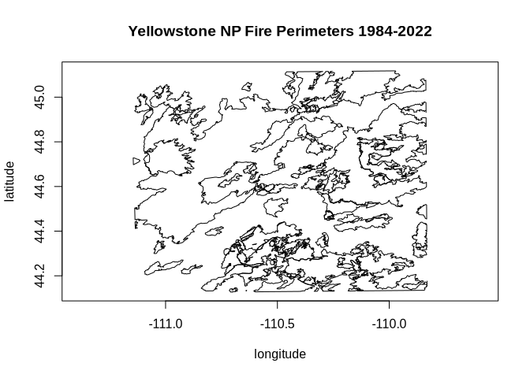

Using R and GDAL from conda-forge
Source:vignettes/articles/r-and-gdal-in-conda.Rmd
r-and-gdal-in-conda.RmdDRAFT: last updated 2026-05-25
Conda is an open-source, cross-platform, language-agnostic package manager and environment management system. The conda package format is general purpose and covers a wide selection of programming languages, including C, C++, Fortran, Rust, Go, Python, and R.
Conda uses the concept of channels as the base for hosting and managing packages. Conda is often associated with the commercial company Anaconda which provides the Anaconda.org channel of packages. Alternatively, the conda-forge project builds and distributes packages via conda-forge.org. Conda-forge is community-driven and community-curated. Both conda and conda-forge are NumFocus-affiliated projects.
Conda offers features potentially of interest to R users who work with geospatial data:
- install different versions of binary packages with their required dependencies on multiple platforms
- assemble sets of packages in isolation using environments
- manage and switch between environments that use various packages for different projects
- access R and a large number of CRAN packages, along with current GDAL and its dependencies
- benefit from lightweight modular GDAL packaging based on deferred plugin loading
- available plugins include format drivers that sometimes are unavailable in other package managers, such as the Arrow and Parquet vector drivers
Conda-forge provides pre-compiled binary packages for gdalraster that track CRAN releases, for the following platforms:

Several tools are available for managing packages in the conda
ecosystem. The next few sections describe conda. Pixi might also be considered
as a fast, modern, and reproducible package management tool. The section
“Pixi for conda package management” further below describes a
Pixi-equivalent setup.
Using conda from Miniforge
Install Miniforge: https://conda-forge.org/download/
The webpage provides links to the installer for each supported platform along with basic installation instructions. For more detailed instructions, see https://github.com/conda-forge/miniforge.
Other conda distributions could also be used. Conda-forge recommends the use of Miniforge instead of the Anaconda Distribution to reduce chances of unsolvable/conflicting installations, and it is a smaller download.
On Linux, at the end of the installation you will prompted with:
Enter yes so that the PATH environment
variable is set correctly in your .bashrc file , but also
note the command given along with that prompt, which can be used to undo
this later if you choose:
You can also use the command conda deactivate to
deactivate the conda base environment in your shell at any
time, if needed, and conda activate to re-activate it.
Working with conda environments
Environments in conda are self-contained, isolated
spaces where you can install specific versions of Python and R along
with packages and their dependencies. Conda provides a comprehensive
feature set for managing environments. You can create, export, list,
remove, and update environments that have different versions of software
installed in them. Switching or moving between environments is called
activating the environment.
More information on environments can be found in the documentation from Anaconda:
https://www.anaconda.com/docs/getting-started/working-with-conda/environments
Creating a new environment for R
The syntax for creating and activating a new environment in the terminal is:
When creating a new environment, you can add R by explicitly
including r-base in the list of packages. The
r-essentials package is a bundle of commonly used R
packages, which also includes the r-recommended bundle
(i.e., the packages graphics, methods,
stats, tools, utils, etc. that
are normally included with base R).
The example below creates an R environment named r_env
with gdalraster included. The package channel can be
specified with --channel conda-forge, or here using short
names -c, and -n for the environment
--name. The command conda list will print a
list of all installed packages in the activated environment.
conda create -c conda-forge -n r_env r-base r-essentials r-gdalraster
conda activate r_env
conda listNote that conda-forge is the default channel in Miniforge, so it
could be omitted here. It would need to be specified explicitly as shown
above if a different conda distribution is used.
R package names in conda-forge always have the r-
prefix. When using R in conda, packages should be installed
with the conda package manager rather than from source or
binaries using install.packages() (i.e., should not mix
packages from CRAN or other repositories such as R-universe). A web
portal for exploring packages available in conda-forge can be found at:
https://conda-forge.org/packages/.
Installing GDAL from conda-forge
GDAL is available in conda-forge as a modular set of packages that
take advantage of GDAL’s support of deferred plugins for geospatial
format drivers. This provides an efficient and streamlined approach to
handling dependencies. The plugin system for conda was
developed by Quansight and Hobu, with more details at:
https://quansight.com/post/introducing-lightweight-versions-of-gdal-and-pdal/
The following packages are available from conda-forge.
GDAL library packages:
-
libgdal-core: core C++ library with a number of built-in drivers -
gdal: Python bindings and Python utilities -
libgdalmeta package: core C++ library and all plugins except arrow/parquet
Driver plugins:
-
libgdal-arrow-parquet:vector.arrowandvector.parquetdrivers as a plugin -
libgdal-avif:raster.avifdriver as a plugin -
libgdal-fits:raster.fitsdriver as a plugin -
libgdal-grib:raster.gribdriver as a plugin -
libgdal-hdf4:raster.hdf4driver as a plugin -
libgdal-hdf5:raster.hdf5driver as a plugin -
libgdal-heif:raster.heifdriver as a plugin -
libgdal-jp2openjpeg:raster.jp2openjpegdriver as a plugin -
libgdal-kea:raster.keadriver as a plugin -
libgdal-netcdf:raster.netcdfdriver as a plugin -
libgdal-pdf:raster.pdfdriver as a plugin -
libgdal-postgisraster:raster.postgisrasterdriver as a plugin -
libgdal-pg:vector.pgdriver as a plugin -
libgdal-tiledb:raster.tiledbdriver as a plugin -
libgdal-xls:vector.xlsdriver as a plugin
The package libgdal-core is a dependency of
r-gdalraster so it is installed automatically, but the
additional driver plugins are optional. We’ll install additional drivers
before starting an R session in order to work with Parquet vector files.
The following command installs libgdal-arrow-parquet in the
active environment (assuming conda-forge is the default channel):
Pixi for conda package management
Pixi is an alternative to using conda as described
above. It is a modern, Rust-based package manager with lockfiles, tasks,
and multi-environment support. Pixi introduces a workspace-centric
approach rather than focusing solely on environments.
Installation instructions can be found in the Pixi Getting Started guide. Once installed you can create an environment in a Pixi workspace, basically equivalent to the setup described above for conda:
pixi init r_example
cd r_example
pixi add r-essentials r-gdalraster libgdal-arrow-parquet
pixi shellThe last command starts an interactive subshell with the environment
activated (use exit to leave the shell). You get a
digest-level pixi.lock lock file automatically, so the
environment is fully reproducible as long as the lock file is commited
with the rest of the project.
Pixi also supports using tools and libraries globally, similar to conda’s base environment without having to use an activate command:
As noted above for conda environments, R packages should be installed
with pixi add in this case rather than from source or
binaries using install.packages() (i.e., should not mix
packages from CRAN or other repositories such as R-universe).
Example using gdalraster from conda-forge
We can now start an R session in the active environment by typing R + <Enter>.
The code below uses a sample GeoPackage file included with gdalraster containing perimeter polygons of fires within Yellowstone National Park during 1984-2022 [Monitoring Trends in Burn Severity program MTBS]. The polygons are in a Lambert Conformal Conic projection (Montana State Plane EPSG:32100). The GeoPackage layer will be converted to Parquet format, with inverse projection to WGS84 latitude / longitude coordinates.
gdalraster provides API
bindings to GDAL’s command line interface (CLI) algorithms. The
vector reproject algorithm implements reprojection with
optional format conversion.
library(gdalraster)
#> GDAL 3.13.0 (released 2026-05-04), GEOS 3.14.1, PROJ 9.8.1
## verify the Parquet driver is available
gdal_formats("Parquet") |> str()
#> 'data.frame': 1 obs. of 17 variables:
#> $ short_name : chr "Parquet"
#> $ extensions : chr "parquet"
#> $ raster : logi FALSE
#> $ multidim_raster : logi FALSE
#> $ vector : logi TRUE
#> $ geography_network : logi FALSE
#> $ rw_flag : chr "rw+u"
#> $ virtual_io : logi TRUE
#> $ subdatasets : logi FALSE
#> $ long_name : chr "(Geo)Parquet"
#> $ sql_dialects : chr "OGRSQL SQLITE"
#> $ creation_datatypes : chr ""
#> $ creation_field_types : chr "Integer Integer64 Real String Date Time DateTime Binary IntegerList Integer64List RealList StringList"
#> $ creation_field_subtypes: chr "Boolean Int16 Float32 JSON UUID"
#> $ multiple_vec_layers : logi FALSE
#> $ read_field_domains : logi FALSE
#> $ creation_fld_dom_types : chr ""
## gdalraster example GeoPackage file with MTBS fire perimeters
src <- system.file("extdata/ynp_fires_1984_2022.gpkg", package = "gdalraster")
(src_lyr <- new(GDALVector, src, "mtbs_perims"))
#> C++ object of class <GDALVector>
#> • Driver: GeoPackage (GPKG)
#> • DSN:
#> "/home/ctoney/miniforge3/envs/r_env/lib/R/library/gdalraster/extdata/ynp_fires_1984_2022.gpkg"
#> • Layer: mtbs_perims
#> • CRS: NAD83 / Montana (EPSG:32100)
#> • Geometry: MULTIPOLYGON
src_lyr$getFeatureCount()
#> [1] 61
## get usage info for the algorithm
gdal_usage("vector reproject")
#>
#> Usage: vector reproject [OPTIONS] <INPUT> <OUTPUT>
#>
#> Reproject a vector dataset.
#>
#> Positional arguments:
#> -i, --input <INPUT>
#> Input vector datasets
#> [required]
#> -o, --output <OUTPUT>
#> Output vector dataset
#> [required]
#>
#> Common options:
#> -q, --quiet
#> Quiet mode (no progress bar or warning message)
#>
#> Options:
#> -l, --layer, --input-layer <INPUT-LAYER>
#> Input layer name(s)
#> [0 or more values]
#> [packed values allowed, repeated arg allowed]
#> -f, --of, --format, --output-format <OUTPUT-FORMAT>
#> Output format ("GDALG" allowed)
#> --co, --creation-option <KEY>=<VALUE>
#> Creation option
#> [0 or more values]
#> [packed values not allowed, repeated arg allowed]
#> --lco, --layer-creation-option <KEY>=<VALUE>
#> Layer creation option
#> [0 or more values]
#> [packed values not allowed, repeated arg allowed]
#> --overwrite
#> Whether overwriting existing output dataset is allowed
#> [default: FALSE]
#> --update
#> Whether to open existing dataset in update mode
#> [default: FALSE]
#> --overwrite-layer
#> Whether overwriting existing output layer is allowed
#> [default: FALSE]
#> --append
#> Whether appending to existing layer is allowed
#> [default: FALSE]
#> [mutually exclusive with --upsert]
#> --output-layer <OUTPUT-LAYER>
#> Output layer name
#> --skip-errors
#> Skip errors when writing features
#> --active-layer <ACTIVE-LAYER>
#> Set active layer (if not specified, all)
#> -s, --input-crs <INPUT-CRS>
#> Input CRS
#> -d, --output-crs <OUTPUT-CRS>
#> Output CRS
#> [required]
#>
#> Advanced options:
#> --if, --input-format <INPUT-FORMAT>
#> Input formats
#> [0 or more values]
#> [packed values allowed, repeated arg allowed]
#> --oo, --open-option <KEY>=<VALUE>
#> Open options
#> [0 or more values]
#> [packed values not allowed, repeated arg allowed]
#> --output-oo, --output-open-option <KEY>=<VALUE>
#> Output open options
#> [0 or more values]
#> [packed values not allowed, repeated arg allowed]
#> --upsert
#> Upsert features (implies 'append')
#> [mutually exclusive with --append]
#>
#> For more details: <https://gdal.org/programs/gdal_vector_reproject.html>
## inverse project to WGS84
dst <- "/home/ctoney/data/ynp_fires_1984_2022.parquet"
args <- list(input = src_lyr,
output = dst,
output_crs = "EPSG:4326")
## run the algorithm and close datasets when finished
gdal_run("vector reproject", args, close = TRUE)
#> ✔ Done (21ms)
#>
#> C++ object of class <GDALAlg>
#> • Command: "vector reproject"
#> • Description: Reproject a vector dataset.
#> • Help URL: <https://gdal.org/programs/gdal_vector_pipeline.html>
(dst_lyr <- new(GDALVector, dst))
#> C++ object of class <GDALVector>
#> • Driver: (Geo)Parquet (Parquet)
#> • DSN: "/home/ctoney/data/ynp_fires_1984_2022.parquet"
#> • Layer: ynp_fires_1984_2022
#> • CRS: WGS 84 (EPSG:4326)
#> • Geometry: MULTIPOLYGON
## verify the output dataset
dst_lyr$info()
#> INFO: Open of `/home/ctoney/data/ynp_fires_1984_2022.parquet'
#> using driver `Parquet' successful.
#>
#> Layer name: ynp_fires_1984_2022
#> Geometry: Multi Polygon
#> Feature Count: 61
#> Extent: (-111.144825, 44.127297) - (-109.830665, 45.117887)
#> Layer SRS WKT:
#> GEOGCRS["WGS 84",
#> ENSEMBLE["World Geodetic System 1984 ensemble",
#> MEMBER["World Geodetic System 1984 (Transit)"],
#> MEMBER["World Geodetic System 1984 (G730)"],
#> MEMBER["World Geodetic System 1984 (G873)"],
#> MEMBER["World Geodetic System 1984 (G1150)"],
#> MEMBER["World Geodetic System 1984 (G1674)"],
#> MEMBER["World Geodetic System 1984 (G1762)"],
#> MEMBER["World Geodetic System 1984 (G2139)"],
#> MEMBER["World Geodetic System 1984 (G2296)"],
#> ELLIPSOID["WGS 84",6378137,298.257223563,
#> LENGTHUNIT["metre",1]],
#> ENSEMBLEACCURACY[2.0]],
#> PRIMEM["Greenwich",0,
#> ANGLEUNIT["degree",0.0174532925199433]],
#> CS[ellipsoidal,2],
#> AXIS["geodetic latitude (Lat)",north,
#> ORDER[1],
#> ANGLEUNIT["degree",0.0174532925199433]],
#> AXIS["geodetic longitude (Lon)",east,
#> ORDER[2],
#> ANGLEUNIT["degree",0.0174532925199433]],
#> USAGE[
#> SCOPE["Horizontal component of 3D system."],
#> AREA["World."],
#> BBOX[-90,-180,90,180]],
#> ID["EPSG",4326]]
#> Data axis to CRS axis mapping: 2,1
#> FID Column = fid
#> Geometry Column = geom
#> event_id: String (254.0)
#> incid_name: String (254.0)
#> incid_type: String (254.0)
#> map_id: Integer64 (0.0)
#> burn_bnd_ac: Integer64 (0.0)
#> burn_bnd_lat: String (10.0)
#> burn_bnd_lon: String (10.0)
#> ig_date: Date
#> ig_year: Integer (0.0)
## check the linework
features <- dst_lyr$fetch(-1)
nrow(features)
#> [1] 61
plot(features, xlab = "longitude", ylab = "latitude",
main = "Yellowstone NP Fire Perimeters 1984-2022")
src_lyr$close()
dst_lyr$close()Created with reprex v2.1.1